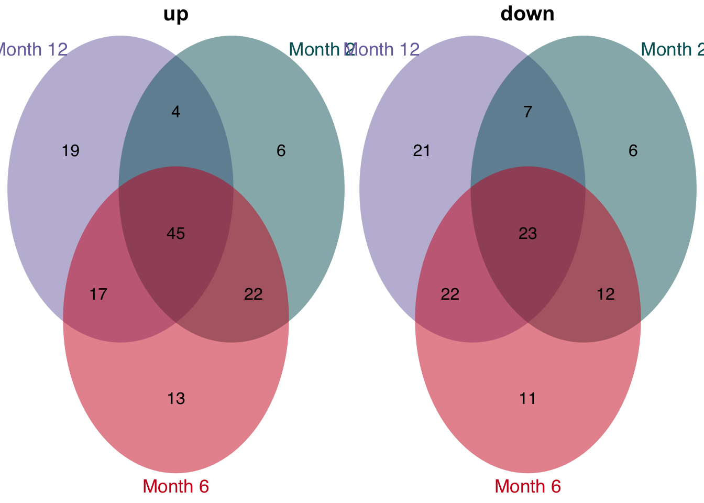
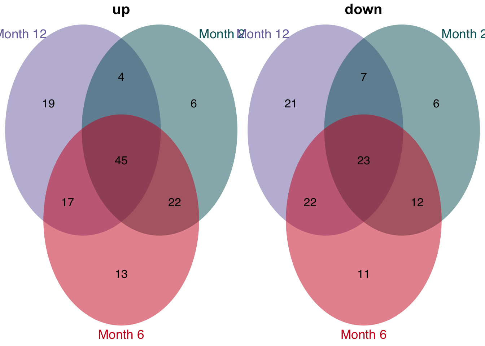

Meta anlaysis of patients cohort and chronic CCl4 mouse model
Christian H. Holland
2020-12-19
Last updated: 2020-12-20
Checks: 7 0
Knit directory: meta-liver/
This reproducible R Markdown analysis was created with workflowr (version 1.6.2). The Checks tab describes the reproducibility checks that were applied when the results were created. The Past versions tab lists the development history.
Great! Since the R Markdown file has been committed to the Git repository, you know the exact version of the code that produced these results.
Great job! The global environment was empty. Objects defined in the global environment can affect the analysis in your R Markdown file in unknown ways. For reproduciblity it’s best to always run the code in an empty environment.
The command set.seed(20201218) was run prior to running the code in the R Markdown file. Setting a seed ensures that any results that rely on randomness, e.g. subsampling or permutations, are reproducible.
Great job! Recording the operating system, R version, and package versions is critical for reproducibility.
Nice! There were no cached chunks for this analysis, so you can be confident that you successfully produced the results during this run.
Great job! Using relative paths to the files within your workflowr project makes it easier to run your code on other machines.
Great! You are using Git for version control. Tracking code development and connecting the code version to the results is critical for reproducibility.
The results in this page were generated with repository version e686c2a. See the Past versions tab to see a history of the changes made to the R Markdown and HTML files.
Note that you need to be careful to ensure that all relevant files for the analysis have been committed to Git prior to generating the results (you can use wflow_publish or wflow_git_commit). workflowr only checks the R Markdown file, but you know if there are other scripts or data files that it depends on. Below is the status of the Git repository when the results were generated:
Ignored files:
Ignored: .DS_Store
Ignored: .Rhistory
Ignored: .Rproj.user/
Ignored: analysis/human-diehl-nafld_cache/
Ignored: analysis/human-hampe13-nash_cache/
Ignored: analysis/human-hampe14-misc_cache/
Ignored: analysis/human-hoang-nafld_cache/
Ignored: analysis/human-ramnath-fibrosis_cache/
Ignored: analysis/meta-chronic-vs-acute_cache/
Ignored: analysis/mouse-acute-apap_cache/
Ignored: analysis/mouse-acute-bdl_cache/
Ignored: analysis/mouse-acute-ccl4_cache/
Ignored: analysis/mouse-acute-lps_cache/
Ignored: analysis/mouse-acute-ph_cache/
Ignored: analysis/mouse-acute-tunicamycin_cache/
Ignored: analysis/mouse-chronic-ccl4_cache/
Ignored: code/.DS_Store
Ignored: code/README.html
Ignored: data/.DS_Store
Ignored: data/README.html
Ignored: data/annotation/
Ignored: data/human-diehl-nafld/
Ignored: data/human-hampe13-nash/
Ignored: data/human-hampe14-misc/
Ignored: data/human-hoang-nafld/
Ignored: data/human-ramnath-fibrosis/
Ignored: data/meta-chronic-vs-acute/
Ignored: data/meta-mouse-vs-human/
Ignored: data/mouse-acute-apap/
Ignored: data/mouse-acute-bdl/
Ignored: data/mouse-acute-ccl4/
Ignored: data/mouse-acute-lps/
Ignored: data/mouse-acute-ph/
Ignored: data/mouse-acute-tunicamycin/
Ignored: data/mouse-chronic-ccl4/
Ignored: external_software/.DS_Store
Ignored: external_software/README.html
Ignored: external_software/stem/.DS_Store
Ignored: output/.DS_Store
Ignored: output/README.html
Ignored: output/human-diehl-nafld/
Ignored: output/human-hampe13-nash/
Ignored: output/human-hampe14-misc/
Ignored: output/human-hoang-nafld/
Ignored: output/human-ramnath-fibrosis/
Ignored: output/meta-chronic-vs-acute/
Ignored: output/meta-mouse-vs-human/
Ignored: output/mouse-acute-apap/
Ignored: output/mouse-acute-bdl/
Ignored: output/mouse-acute-ccl4/
Ignored: output/mouse-acute-lps/
Ignored: output/mouse-acute-ph/
Ignored: output/mouse-acute-tunicamycin/
Ignored: output/mouse-chronic-ccl4/
Ignored: renv/library/
Ignored: renv/staging/
Unstaged changes:
Deleted: analysis/meta-analysis-chronic-vs-acute.Rmd
Note that any generated files, e.g. HTML, png, CSS, etc., are not included in this status report because it is ok for generated content to have uncommitted changes.
These are the previous versions of the repository in which changes were made to the R Markdown (analysis/meta-mouse-vs-human.Rmd) and HTML (docs/meta-mouse-vs-human.html) files. If you’ve configured a remote Git repository (see ?wflow_git_remote), click on the hyperlinks in the table below to view the files as they were in that past version.
| File | Version | Author | Date | Message |
|---|---|---|---|---|
| Rmd | e686c2a | christianholland | 2020-12-20 | complete analyses |
Introduction
Here we integrate various patient cohorts of chronic liver diseases with the chronic CCl4 mouse model to identify consistently deregulated genes in mouse and human.
Libraries and sources
These libraries and sources are used for this analysis.
library(tidyverse)
library(tidylog)
library(here)
library(fgsea)
library(dorothea)
library(progeny)
library(biobroom)
library(circlize)
library(AachenColorPalette)
library(lemon)
library(VennDiagram)
library(ComplexHeatmap)
library(gridExtra)
library(cowplot)
library(ggpubr)
library(msigdf) # remotes::install_github("ToledoEM/msigdf@v7.1")
library(gtools)
options("tidylog.display" = list(print))
source(here("code/utils-utils.R"))
source(here("code/utils-plots.R"))Definition of global variables that are used throughout this analysis.
# i/o
data_path <- "data/meta-mouse-vs-human"
output_path <- "output/meta-mouse-vs-human"
# graphical parameters
# fontsize
fz <- 9
# color function for heatmaps
col_fun <- colorRamp2(
c(-4, 0, 4),
c(aachen_color("blue"), "white", aachen_color("red"))
)Merging data of all mouse models
Merging contrasts
Contrasts from all available patient cohorts are merged into a single object.
# acute
diehl <- readRDS(here("output/human-diehl-nafld/limma_result.rds")) %>%
mutate(phenotype = "nafld",
source = "diehl")
hoang <- readRDS(here("output/human-hoang-nafld/limma_result.rds")) %>%
filter(contrast_reference == "stage_0") %>%
mutate(phenotype = "nafld",
source = "hoang")
#> filter: no rows removed
hampe13 <- readRDS(here("output/human-hampe13-nash/limma_result.rds")) %>%
filter(contrast_reference == "control") %>%
mutate(phenotype = "nash",
source = "hampe13")
#> filter: no rows removed
hampe14 <- readRDS(here("output/human-hampe14-misc/limma_result.rds")) %>%
filter(contrast_reference == "control") %>%
mutate(phenotype = "omni",
source = "hampe14")
#> filter: no rows removed
ramnath <- readRDS(here("output/human-ramnath-fibrosis/limma_result.rds")) %>%
mutate(phenotype = "fibrosis",
source = "ramnath")
combined_contrasts <- bind_rows(diehl, ramnath, hoang, hampe13,
hampe14) %>%
select(-contrast_reference) %>%
mutate(contrast = as_factor(contrast)) %>%
assign_deg() %>%
# phenotypes related to obesity are removed
filter(phenotype != "obesity") %>%
filter(!str_detect(contrast, "obese"))
#> select: dropped one variable (contrast_reference)
#> filter: no rows removed
#> filter: removed 37,642 rows (13%), 257,688 rows remaining
saveRDS(combined_contrasts, here(output_path, "limma_result.rds"))Gene coverage
Barplot showing the gene coverage of the patient cohorts.
contrasts <- readRDS(here(output_path, "limma_result.rds")) %>%
distinct(gene, phenotype, source) %>%
count(phenotype, source)
#> distinct: removed 167,964 rows (65%), 89,724 rows remaining
#> count: now 5 rows and 3 columns, ungrouped
contrasts %>%
ggplot(aes(x = n, fct_reorder(interaction(source, phenotype, sep = "_"), n),
group = source)) +
geom_col() +
labs(x="Gene coverage", y=NULL) +
my_theme(grid = "x", fsize = fz) 
Number of differential expressed genes
Barplot showing the number of differentially expressed genes for each contrast.
contrasts <- readRDS(here(output_path, "limma_result.rds"))
combined_contrasts %>%
filter(regulation != "ns") %>%
count(contrast, source, regulation) %>%
ggplot(aes(y=interaction(source, contrast), x=n, fill = regulation)) +
geom_col(position=position_dodge()) +
labs(y=NULL, y="Number of degs") +
my_theme(grid = "x", fsize = fz)
#> filter: removed 255,692 rows (99%), 1,996 rows remaining
#> count: now 26 rows and 4 columns, ungrouped
Interstudy analysis of patient cohorts
Mutual similarity of differential expressed genes
This analysis computes the similarity of differential expressed genes for all contrasts of the patient cohorts. Similarity is measured with the Jaccard Index.
contrasts <- readRDS(here(output_path, "limma_result.rds"))
# populate gene sets with a fixed size selected by effect size (t-value)
mat_top = contrasts %>%
group_by(contrast, phenotype, source) %>%
top_n(500, abs(statistic)) %>%
mutate(key = row_number()) %>%
ungroup() %>%
unite(geneset, source, phenotype, contrast, sep="-") %>%
mutate(geneset = as_factor(geneset)) %>%
select(geneset, gene, key) %>%
untdy(key, geneset, gene)
#> top_n (grouped): removed 250,188 rows (97%), 7,500 rows remaining
#> ungroup: no grouping variables
#> select: dropped 5 variables (logFC, statistic, pval, fdr, regulation)
#> select: columns reordered (key, geneset, gene)
#> spread: reorganized (geneset, gene) into (diehl-nafld-advanced_vs_mild, ramnath-fibrosis-hcv_adv_vs_early, ramnath-fibrosis-nafld_adv_vs_early, hoang-nafld-stage_1_vs_0, hoang-nafld-stage_2_vs_0, …) [was 7500x3, now 500x16]
# usage of jaccard index for balanced set sizes
j = set_similarity(mat_top, measure = "jaccard", tidy=T)
#> gather: reorganized (diehl-nafld-advanced_vs_mild, ramnath-fibrosis-hcv_adv_vs_early, ramnath-fibrosis-nafld_adv_vs_early, hoang-nafld-stage_1_vs_0, hoang-nafld-stage_2_vs_0, …) into (set2, similarity) [was 15x16, now 225x3]
#> drop_na: removed 105 rows (47%), 120 rows remaining
#> filter: removed 15 rows (12%), 105 rows remaining
#> mutate_if: converted 'set1' from character to factor (0 new NA)
#> converted 'set2' from character to factor (0 new NA)
saveRDS(j, here(output_path, "gene_set_similarity.rds"))
j %>%
ggplot(aes(x = set1, y = set2, fill = similarity)) +
geom_tile(color = "black") +
scale_fill_gradient(low = "white", high = aachen_color("green")) +
labs(x = NULL, y = NULL, fill = "Jaccard\nIndex") +
theme(axis.text.x = element_text(angle = 45, hjust = 1)) +
my_theme(fsize = fz, grid = "no")
Mutual enrichment of differential expressed genes
This analysis explores whether the top differential expressed genes of specific contrasts of the acute mouse models are consistently regulated across the acute mouse models.
contrasts <- readRDS(here(output_path, "limma_result.rds"))
# populate gene sets with a fixed size selected by effect size (t-value)
genesets_top = contrasts %>%
mutate(direction = case_when(sign(statistic) >= 0 ~ "up",
sign(statistic) < 0 ~ "down")) %>%
group_by(source, phenotype, contrast, direction) %>%
top_n(500, abs(statistic)) %>%
ungroup() %>%
unite(geneset, source, phenotype, contrast, sep = "-") %>%
unite(geneset, geneset, direction, sep = "|") %>%
mutate(geneset = as_factor(geneset)) %>%
select(geneset, gene)
#> top_n (grouped): removed 242,688 rows (94%), 15,000 rows remaining
#> ungroup: no grouping variables
#> select: dropped 5 variables (logFC, statistic, pval, fdr, regulation)
# construct signature matrix/data frame
signature_df = contrasts %>%
unite(signature, source, phenotype, contrast, sep = "-") %>%
mutate(signature = as_factor(signature)) %>%
untdy("gene", "signature", "statistic")
#> select: dropped 4 variables (logFC, pval, fdr, regulation)
#> spread: reorganized (signature, statistic) into (diehl-nafld-advanced_vs_mild, ramnath-fibrosis-hcv_adv_vs_early, ramnath-fibrosis-nafld_adv_vs_early, hoang-nafld-stage_1_vs_0, hoang-nafld-stage_2_vs_0, …) [was 257688x3, now 24107x16]
# run gsea
set.seed(123)
gsea_res_top = run_gsea(signature_df, genesets_top, tidy=T) %>%
separate(geneset, into = c("geneset", "direction"), sep = "[|]") %>%
mutate(signature = as_factor(signature),
geneset = as_factor(geneset))
#> summarise: now 30 rows and 2 columns, ungrouped
#> rename: renamed one variable (geneset)
#> select: dropped one variable (gene)
#> distinct: removed 14,970 rows (>99%), 30 rows remaining
#> left_join: added no columns
#> > rows only in x 0
#> > rows only in y ( 0)
#> > matched rows 450
#> > =====
#> > rows total 450
saveRDS(gsea_res_top, here(output_path, "interstudy_enrichment.rds"))
gsea_res_top %>%
mutate(label = stars.pval(padj)) %>%
ggplot(aes(x = signature, y = geneset, fill = ES)) +
geom_tile() +
geom_text(aes(label = label)) +
facet_wrap(~direction) +
theme(axis.text.x = element_text(angle = 45, hjust = 1)) +
scale_fill_gradient2() +
my_theme(fsize = fz, grid = "no") +
labs(x = "Signature", y = "Gene set")
Comparison of mouse and human data
With this analysis we check whether the top differential expressed human genes have the same direction of regulation in the chronic mouse model. ## Enrichment of human gene sets in mouse signatures
contrasts <- readRDS(here(output_path, "limma_result.rds"))
chronic_mouse = readRDS(
here("output/mouse-chronic-ccl4/limma_result_hs.rds")
) %>%
filter(contrast_reference == "pure_ccl4")
#> filter: removed 120,807 rows (75%), 40,269 rows remaining
# populate gene sets with a fixed size selected by effect size (t-value)
genesets_top = contrasts %>%
mutate(direction = case_when(sign(statistic) >= 0 ~ "up",
sign(statistic) < 0 ~ "down")) %>%
group_by(source, phenotype, contrast, direction) %>%
top_n(500, abs(statistic)) %>%
ungroup() %>%
unite(geneset, source, phenotype, contrast, sep = "-") %>%
unite(geneset, geneset, direction, sep = "|") %>%
mutate(geneset = as_factor(geneset)) %>%
select(geneset, gene)
#> top_n (grouped): removed 242,688 rows (94%), 15,000 rows remaining
#> ungroup: no grouping variables
#> select: dropped 5 variables (logFC, statistic, pval, fdr, regulation)
signature_df = chronic_mouse %>%
untdy("gene", "contrast", "statistic")
#> select: dropped 5 variables (logFC, pval, fdr, regulation, contrast_reference)
#> spread: reorganized (contrast, statistic) into (pure_ccl_2m_vs_0m, pure_ccl_6m_vs_0m, pure_ccl_12m_vs_0m) [was 40269x3, now 13423x4]
# run gsea
set.seed(123)
gsea_res_top = run_gsea(signature_df, genesets_top, tidy=T) %>%
separate(geneset, into = c("geneset", "direction"), sep = "[|]") %>%
separate(geneset, into = c("source", "phenotype", "contrast"), sep = "-", remove = F) %>%
mutate(signature = as_factor(signature),
geneset = as_factor(geneset),
time = parse_number(as.character(signature)))
#> summarise: now 30 rows and 2 columns, ungrouped
#> rename: renamed one variable (geneset)
#> select: dropped one variable (gene)
#> distinct: removed 14,970 rows (>99%), 30 rows remaining
#> left_join: added no columns
#> > rows only in x 0
#> > rows only in y ( 0)
#> > matched rows 90
#> > ====
#> > rows total 90
saveRDS(gsea_res_top, here(output_path, "gsea_res.rds"))
gsea_res_top %>%
mutate(label = stars.pval(padj)) %>%
ggplot(aes(x=signature, y=geneset, fill=ES)) +
geom_tile() +
geom_text(aes(label = label), size = fz/(14/5), vjust = 1) +
facet_wrap(~direction, ncol = 2) +
theme(axis.text.x = element_text(angle = 45, hjust = 1),
axis.line = element_blank(),
axis.ticks = element_blank()) +
scale_fill_gradient2(low = aachen_color("blue"), mid = "white",
high = aachen_color("red")) +
my_theme(grid = "no", fsize = fz) +
labs(x="Signature", y="Gene Set", fill = "ES") +
guides(fill=guide_colorbar(title="ES"))
Leading edge extraction
The enrichment of human genes sets in mouse signatures reveals that there is a set of genes which is significantly consistently deregulated in mouse and human. To identify these genes we extract the leading edge genes from the enrichment analysis.
gsea_res = readRDS(here(output_path, "gsea_res.rds"))
# extract leading edges from significant and correctly directed enrichments
leading_edges = gsea_res %>%
filter(padj <= 0.05 &
(direction == "up" & ES >= 0) | (direction == "down" & ES < 0)) %>%
unnest(leadingEdge) %>%
rename(gene = leadingEdge)
#> filter: removed 12 rows (13%), 78 rows remaining
#> rename: renamed one variable (gene)
saveRDS(leading_edges, here(output_path, "individual_le.rds"))
# for each study a union of leading edges is build across all contrast per time
# point
# subsequently we count how often a gene appears per time and direction
# (max 5 times because we have 5 studies in total)
# filter for those leading edges that appear in at least three studies
unified_le = leading_edges %>%
distinct(signature, direction, time, source, phenotype, gene) %>%
count(signature, time, gene, direction, sort = T, name = "n_studies") %>%
filter(n_studies >= 3)
#> distinct: removed 3,923 rows (32%), 8,316 rows remaining
#> count: now 6,080 rows and 5 columns, ungrouped
#> filter: removed 5,632 rows (93%), 448 rows remaining
# overlap of unified and consistent leading per time point
unified_le %>%
rename(regulation = direction) %>%
mutate(class = str_c("Month ", time)) %>%
group_split(class) %>%
plot_venn_diagram()
#> rename: renamed one variable (regulation)
#> distinct: removed 157 rows (99%), one row remaining
#> distinct: removed 124 rows (99%), one row remaining
#> distinct: removed 164 rows (99%), one row remaining
#> count: now 2 rows and 2 columns, ungrouped
#> count: now 2 rows and 2 columns, ungrouped
#> count: now 2 rows and 2 columns, ungrouped
#> filter: removed one row (50%), one row remaining
#> filter: removed one row (50%), one row remaining
#> filter: removed one row (50%), one row remaining
#> filter: removed 73 rows (46%), 85 rows remaining
#> filter: removed 48 rows (38%), 77 rows remaining
#> filter: removed 48 rows (38%), 77 rows remaining
#> filter: removed 68 rows (41%), 97 rows remaining
#> filter: removed 73 rows (46%), 85 rows remaining
#> filter: removed 68 rows (41%), 97 rows remaining
#> filter: removed 73 rows (46%), 85 rows remaining
#> filter: removed 48 rows (38%), 77 rows remaining
#> filter: removed 68 rows (41%), 97 rows remaining
#> filter: removed one row (50%), one row remaining
#> filter: removed one row (50%), one row remaining
#> filter: removed one row (50%), one row remaining
#> filter: removed 85 rows (54%), 73 rows remaining
#> filter: removed 77 rows (62%), 48 rows remaining
#> filter: removed 77 rows (62%), 48 rows remaining
#> filter: removed 97 rows (59%), 68 rows remaining
#> filter: removed 85 rows (54%), 73 rows remaining
#> filter: removed 97 rows (59%), 68 rows remaining
#> filter: removed 85 rows (54%), 73 rows remaining
#> filter: removed 77 rows (62%), 48 rows remaining
#> filter: removed 97 rows (59%), 68 rows remaining 

saveRDS(unified_le, here(output_path, "leading_edges.rds"))Heatmap of leading edge genes
# load leading edge genes and human and mouse contrasts
le = readRDS(here(output_path, "leading_edges.rds"))
contrasts <- readRDS(here(output_path, "limma_result.rds"))
chronic_mouse = readRDS(
here("output/mouse-chronic-ccl4/limma_result_hs.rds")
) %>%
filter(contrast_reference == "pure_ccl4")
#> filter: removed 120,807 rows (75%), 40,269 rows remaining
# filter mouse and human genes for leading edge genes
c = chronic_mouse %>%
inner_join(le, by="gene") %>%
mutate(class = "chronic") %>%
select(gene, contrast, logFC, class)
#> inner_join: added 4 columns (signature, time, direction, n_studies)
#> > rows only in x (39,585)
#> > rows only in y ( 0)
#> > matched rows 1,344 (includes duplicates)
#> > ========
#> > rows total 1,344
#> select: dropped 9 variables (statistic, pval, fdr, regulation, contrast_reference, …)
h = contrasts %>%
inner_join(le, by="gene") %>%
mutate(class = "human") %>%
unite(contrast, source, phenotype, contrast, sep="-") %>%
select(gene, contrast, logFC, class)
#> inner_join: added 4 columns (signature, time, direction, n_studies)
#> > rows only in x (254,285)
#> > rows only in y ( 0)
#> > matched rows 6,681 (includes duplicates)
#> > =========
#> > rows total 6,681
#> select: dropped 8 variables (statistic, pval, fdr, regulation, signature, …)
df = bind_rows(c, h) %>%
mutate(contrast = as_factor(contrast)) %>%
distinct()
#> distinct: removed 3,938 rows (49%), 4,087 rows remaining
# assign a rank for each gene based on absolute mean logfc
df_ranked = df %>%
group_by(gene) %>%
summarise(mean_logfc = mean(logFC)) %>%
transmute(gene, rank = row_number(-abs(mean_logfc))) %>%
inner_join(df, by="gene")
#> summarise: now 228 rows and 2 columns, ungrouped
#> transmute: dropped one variable (mean_logfc)
#> new variable 'rank' (integer) with 228 unique values and 0% NA
#> inner_join: added 3 columns (contrast, logFC, class)
#> > rows only in x ( 0)
#> > rows only in y ( 0)
#> > matched rows 4,087 (includes duplicates)
#> > =======
#> > rows total 4,087
saveRDS(df_ranked, here(output_path, "consistent_genes.rds"))
mat = df_ranked %>%
filter(rank <= 100) %>%
distinct(gene, contrast, logFC) %>%
untdy(feature = "gene", key = "contrast",value = "logFC") %>%
as.matrix()
#> filter: removed 2,297 rows (56%), 1,790 rows remaining
#> distinct: no rows removed
#> select: no changes
#> spread: reorganized (contrast, logFC) into (pure_ccl_2m_vs_0m, pure_ccl_6m_vs_0m, pure_ccl_12m_vs_0m, diehl-nafld-advanced_vs_mild, ramnath-fibrosis-hcv_adv_vs_early, …) [was 1790x3, now 100x19]
ComplexHeatmap::Heatmap(t(as.matrix(mat)),
col = col_fun,
cluster_rows = F,
cluster_columns = T,
row_names_gp = gpar(fontsize = fz),column_names_gp = gpar(fontsize = fz-4),
name = "logFC",
row_gap = unit(2.5, "mm"),
border = T,
row_split = c(rep("Mouse",3), rep("Human", 15)))
Characterization of leading edge genes
Up and down-regulated leading edge genes are characterized with GO terms, PROGENy’s pathways and DoRothEA’s TFs. As statistic over-representation analysis is used.
signatures = readRDS(here(output_path, "leading_edges.rds")) %>%
distinct(gene, direction)
#> distinct: removed 220 rows (49%), 228 rows remaining
genesets = load_genesets(organism = "human") %>%
filter(confidence %in% c(NA,"A", "B", "C"))
#> filter: removed 2,643,412 rows (80%), 662,851 rows remaining
#> select: renamed one variable (gene) and dropped 2 variables
#> gather: reorganized (Androgen, EGFR, Estrogen, Hypoxia, JAK-STAT, …) into (geneset, weight) [was 1301x15, now 18214x3]
#> filter: removed 16,814 rows (92%), 1,400 rows remaining
#> select: dropped one variable (weight)
#> select: renamed 2 variables (geneset, gene) and dropped one variable
#> filter: removed 472,718 rows (41%), 678,284 rows remaining
ora_res = signatures %>%
nest(sig = -c(direction)) %>%
dplyr::mutate(ora = sig %>% map(run_ora, sets = genesets, min_size = 10,
options = list(alternative = "greater"),
background_n = 20000)) %>%
select(-sig) %>%
unnest(ora)
#> add_count: new variable 'n' (integer) with 671 unique values and 0% NA
#> filter: removed 13,277 rows (2%), 665,007 rows remaining
#> select: dropped one variable (n)
#> ungroup: no grouping variables
#> select: dropped 4 variables (set, conf.low, conf.high, method)
#> add_count: new variable 'n' (integer) with 671 unique values and 0% NA
#> filter: removed 13,277 rows (2%), 665,007 rows remaining
#> select: dropped one variable (n)
#> ungroup: no grouping variables
#> select: dropped 4 variables (set, conf.low, conf.high, method)
#> select: dropped one variable (sig)
saveRDS(ora_res, here(output_path, "leading_edges_characterization.rds"))
sessionInfo()
#> R version 4.0.2 (2020-06-22)
#> Platform: x86_64-apple-darwin17.0 (64-bit)
#> Running under: macOS Mojave 10.14.5
#>
#> Matrix products: default
#> BLAS: /Library/Frameworks/R.framework/Versions/4.0/Resources/lib/libRblas.dylib
#> LAPACK: /Library/Frameworks/R.framework/Versions/4.0/Resources/lib/libRlapack.dylib
#>
#> locale:
#> [1] en_US.UTF-8/en_US.UTF-8/en_US.UTF-8/C/en_US.UTF-8/en_US.UTF-8
#>
#> attached base packages:
#> [1] grid stats graphics grDevices datasets utils methods
#> [8] base
#>
#> other attached packages:
#> [1] gtools_3.8.2 msigdf_7.1 ggpubr_0.4.0
#> [4] cowplot_1.1.0 gridExtra_2.3 ComplexHeatmap_2.4.3
#> [7] VennDiagram_1.6.20 futile.logger_1.4.3 lemon_0.4.5
#> [10] AachenColorPalette_1.1.2 circlize_0.4.11 biobroom_1.20.0
#> [13] broom_0.7.3 progeny_1.10.0 dorothea_1.0.1
#> [16] fgsea_1.14.0 here_1.0.1 tidylog_1.0.2
#> [19] forcats_0.5.0 stringr_1.4.0 dplyr_1.0.2
#> [22] purrr_0.3.4 readr_1.4.0 tidyr_1.1.2
#> [25] tibble_3.0.4 ggplot2_3.3.2 tidyverse_1.3.0
#> [28] workflowr_1.6.2
#>
#> loaded via a namespace (and not attached):
#> [1] colorspace_2.0-0 ggsignif_0.6.0 rjson_0.2.20
#> [4] ellipsis_0.3.1 rio_0.5.16 rprojroot_2.0.2
#> [7] GlobalOptions_0.1.2 fs_1.5.0 clue_0.3-58
#> [10] rstudioapi_0.13 farver_2.0.3 ggrepel_0.9.0
#> [13] fansi_0.4.1 lubridate_1.7.9.2 xml2_1.3.2
#> [16] codetools_0.2-16 knitr_1.30 jsonlite_1.7.2
#> [19] bcellViper_1.24.0 cluster_2.1.0 dbplyr_2.0.0
#> [22] png_0.1-7 compiler_4.0.2 httr_1.4.2
#> [25] backports_1.2.1 assertthat_0.2.1 Matrix_1.2-18
#> [28] cli_2.2.0 later_1.1.0.1 formatR_1.7
#> [31] htmltools_0.5.0 tools_4.0.2 gtable_0.3.0
#> [34] glue_1.4.2 fastmatch_1.1-0 Rcpp_1.0.5
#> [37] carData_3.0-4 Biobase_2.48.0 cellranger_1.1.0
#> [40] vctrs_0.3.6 xfun_0.19 openxlsx_4.2.3
#> [43] rvest_0.3.6 lifecycle_0.2.0 renv_0.12.3
#> [46] rstatix_0.6.0 scales_1.1.1 clisymbols_1.2.0
#> [49] hms_0.5.3 promises_1.1.1 parallel_4.0.2
#> [52] lambda.r_1.2.4 RColorBrewer_1.1-2 yaml_2.2.1
#> [55] curl_4.3 stringi_1.5.3 BiocGenerics_0.34.0
#> [58] zip_2.1.1 BiocParallel_1.22.0 shape_1.4.5
#> [61] rlang_0.4.9 pkgconfig_2.0.3 evaluate_0.14
#> [64] lattice_0.20-41 labeling_0.4.2 tidyselect_1.1.0
#> [67] plyr_1.8.6 magrittr_2.0.1 R6_2.5.0
#> [70] generics_0.1.0 DBI_1.1.0 pillar_1.4.7
#> [73] haven_2.3.1 whisker_0.4 foreign_0.8-80
#> [76] withr_2.3.0 abind_1.4-5 modelr_0.1.8
#> [79] crayon_1.3.4 car_3.0-10 futile.options_1.0.1
#> [82] rmarkdown_2.6 GetoptLong_1.0.5 readxl_1.3.1
#> [85] data.table_1.13.4 git2r_0.27.1 reprex_0.3.0
#> [88] digest_0.6.27 httpuv_1.5.4 munsell_0.5.0